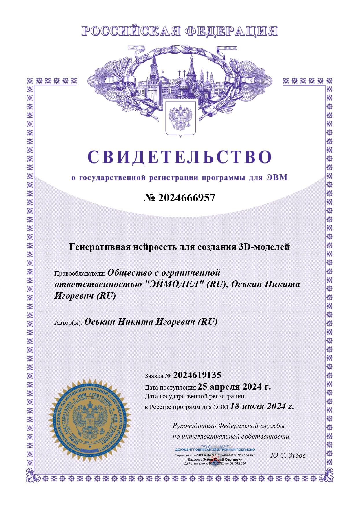
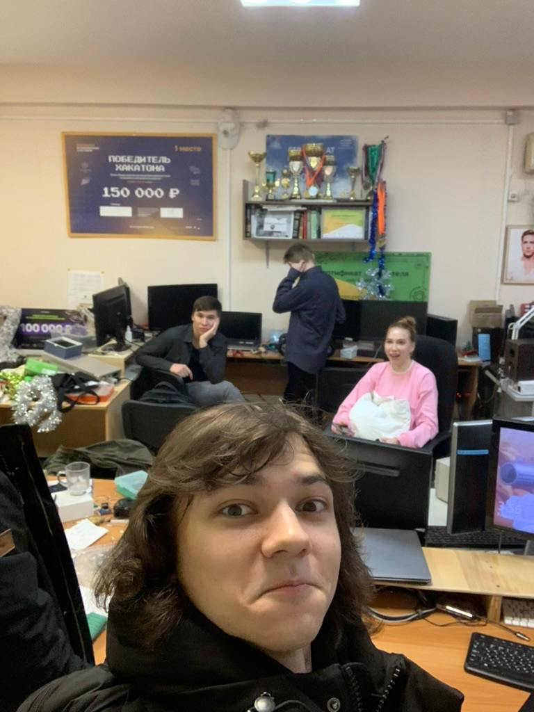

Дети идут в бизнес
Привет! Меня зовут Наташа, мне 21 год, и я генеральный директор. Стоп, не спешите представлять себе компанию с миллиардными оборотами и толпами подчиненных. Мой бизнес – это скорее полигон для экспериментов, моя личная лаборатория возможностей.
Технически, а если быть совсем уж формальной, на меня зарегистрировано общество с ограниченной ответственностью. Звучит серьезно, правда? И знаете что? Это дало мне гораздо больше, чем просто красивую запись в резюме.
Что мне дало свое ООО?
1. Перво-наперво – официальный статус CEO
Мне до сих сложно поверить, но на бумажках фонда пенсионного и социального страхования я – генеральный директор! Это звучит гордо и дает ощущение ответственности за свои решения и действия. Это своего рода трамплин в мир большого бизнеса. Пугает только реакция гипотетических работодателей, которым нужен опыт от 1 года 😊

2. Я – экономист
Как экономисту мне стыдно сдавать бухгалетрию на аутсорс. Поэтому я заставила себя получить бесценный опыт в бухгалтерии (и штрафы от налоговой!). Я научилась сдавать бухгалтерские отчеты в налоговую. Кто может похвастаться, что к своим 20 годам уже успел познакомиться со всеми прелестями общения с налоговыми органами, включая штрафы? Я – да! Этот опыт закалил меня и научил внимательности и ответственности. Не самое приятное, но однозначно полезное умение.
3. Оформленный патент – моя карманная конфетка
ООО позволило мне оформить патент на свою разработку. Это огромный шаг вперед в области юриспруденции и изучении вопроса авторского права. А еще патент дал мне опыт общения с дотошным ФИПСом. Представьте, компании тратят десятки тысяч, чтобы воспользоваться услугами юриста. А я сама себе юрист! Как говорится – и швец, и жнец.
4. Собственная печать организации
Теперь у меня есть настоящая печать компании и право подписывать важные документы. Чувствую себя настоящей "деловой колбасой" честно говоря. Да, возможно, это звучит смешно, но это дает ощущение власти и контроля над ситуацией.
5. Понимание теневой стороны бизнеса
Я поняла, что быть честным человеком не всегда выгодно. Этот пункт самый болезненный, но он открыл мне глаза на реалии бизнеса, где не всегда все так просто и прозрачно, как хотелось бы. Мне пришлось научиться ориентироваться в сложных ситуациях и принимать взвешенные решения, учитывая все риски.
Путешествия – моя страсть и источник вдохновения
Я обожаю путешествовать! Мы с родителями объездили 9 стран, и каждая поездка оставила незабываемые впечатления. Мои фавориты – Чехия и Германия.
Чехия
Это безумно красивая страна, наполненная историей и романтикой. Стоять на площадке Starbucks на склоне холма, с видом на величественный Пражский град, окутанный туманом, – это момент, который навсегда останется в моей памяти.
Германия
Германия покорила меня своей атмосферой и культурой. Люди в восточной Германии показались мне очень близкими по менталитету, поэтому в Берлине я чувствовала себя как дома.
Фан факт:
Я не люблю отели. Предпочитаю апарт-отели, которые больше похожи на уютные квартиры. Считаю, что лучший способ познать другую культуру – это окунуться в быт и повседневную жизнь местных жителей. Только так можно стать настоящим "своим" в чужой стране.
Технарь по призванию
Я увлекаюсь предметами с техническим и математическим уклоном. Мне интересны экономика, бизнес-анализ и программирование. Считаю, что предметы, находящиеся на стыке экономики и ИТ дают мощнейший фундамент для успешной карьеры в современном мире.
Фан факт:
Я программирую с 6 класса! Мой путь в мир IT начался довольно рано, и я ни разу об этом не пожалела.
От котиков до машинного обучения: мой путь к себе
С первого класса я мечтала заниматься бизнесом, а если быть точнее – продавать котиков. Позже поняла, что идея не очень перспективная, и решила переключиться на более серьезные сферы.
В пятом классе я загорелась идеей стать ядерным физиком. Но к шестому классу осознала, что с трудоустройством физиков могут возникнуть сложности, а вот программисты всегда востребованы. Так, в 13 лет, благодаря Java, я познакомилась с объектно-ориентированным программированием (ООП).
Затем я захотела писать на низкоуровневых языках программное обеспечение для аэрокосмической отрасли. Но и тут я поняла, что это не совсем мое. Да и что там делать девочке?
В итоге я выбрала бизнес-информатику. Кто я? Экономист, аналитик, программист. На БИ я не остановилась и решила получить дополнительное профессиональное образование в ТГУ по направлению "Специалист в области машинного обучения и ИИ". В современном мире без машинного обучения никуда!
Фан факт:
В 2023 году (на первом курсе) я подумала: "А почему бы не попробовать себя в конкурсе?" И понеслось: обход кабинетов документооборота, заместителей проректора, технопарка и кафедры системного анализа. Будучи полным ноунеймом, я победила в конкурсе и получила грант!
Мои победы:
- Технокод (Топ-30)
- ЯВДЕЛЕ (региональный)
- Топ-1000 (92 место)
- Акселератор МФТИ х ВТБ (финалист)
Цена успеха: сомнения и самокопание
В 20 лет, когда ты еще "никто и звать тебя никак", а нужно брать на себя ответственность за себя и свою команду, периодически возникает вопрос: "В чем моя ценность?" Этот вопрос мучил меня долгое время и, признаться честно, до сих пор иногда беспокоит.
Но разве мы были бы людьми, если бы не сомневались в себе? Так мы плавно переходим к блоку личных качеств.
Soft skills
Как позже мне рассказали мои друзья-программисты из "подвала" (легендарное место), у меня отлично получается "делать хорошую мину при плохой игре". Иначе говоря, я умею хорошо рассказывать (если захочу!), а еще – находить нужных людей под конкретную ситуацию.
Hard skills
А что мы делаем сейчас, девочки? Качаем hard skills, девочки! Именно в этом я вижу ключ к дальнейшему развитию и успеху. Постоянное обучение и совершенствование профессиональных навыков – это то, что позволит нам оставаться востребованными и конкурентоспособными на рынке труда.